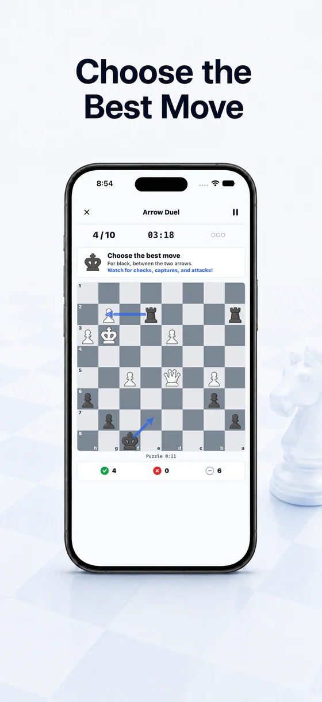
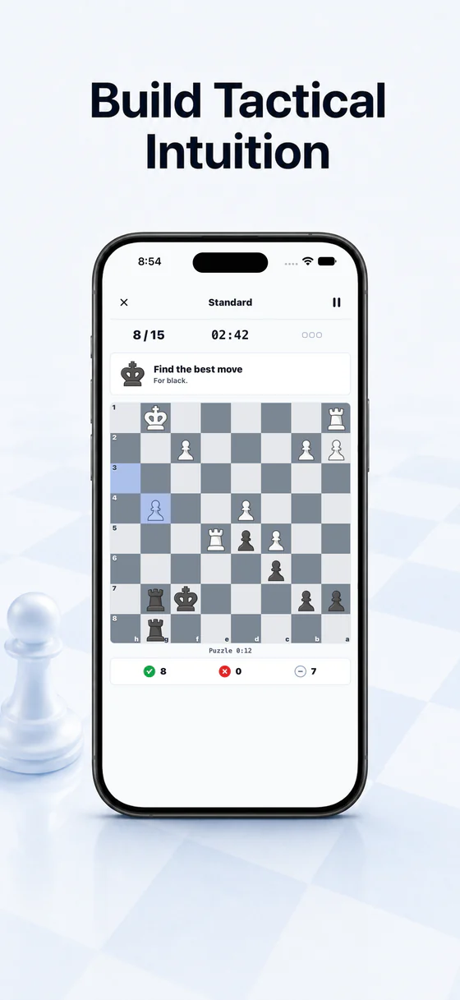
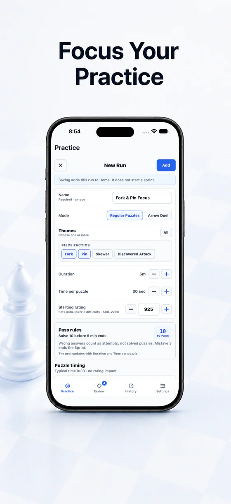
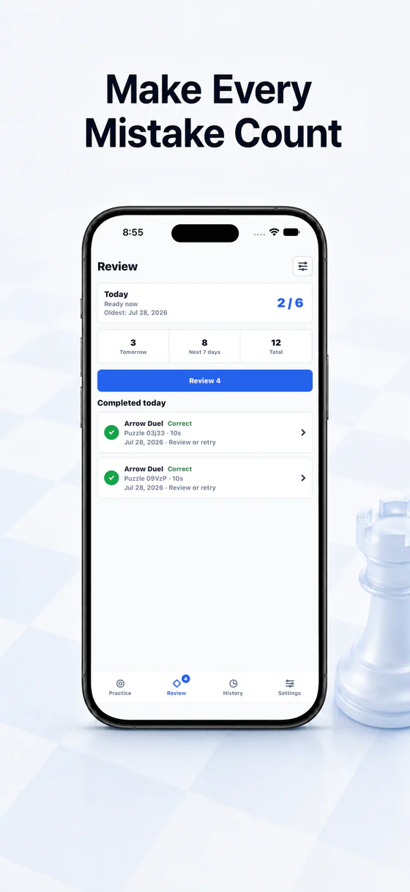
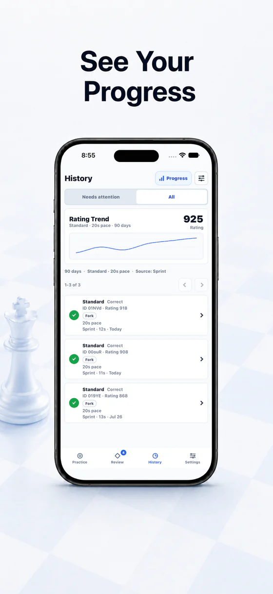
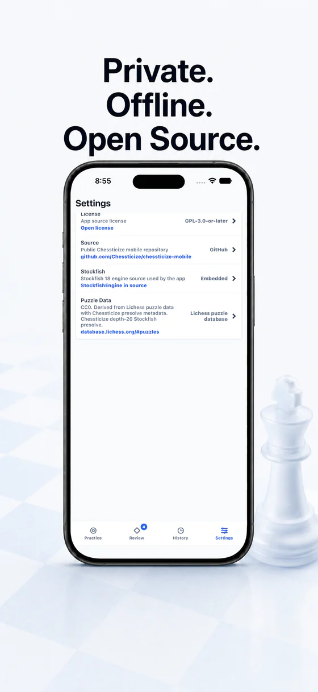

01
Choose the Best Move
Arrow Duel trains you to reject a tempting blunder before you play it.
Free · Offline · Ad-free · Open source
Solve short, rating-matched puzzle Sprints. Learn to reject tempting blunders in Arrow Duel. Choose your own themes and pace. Review every puzzle that deserves another look.
Works offline. No ads. No Chessticize account. No developer data collection.

Rating-matched puzzle Sprints
Blunder prevention with Arrow Duel
Scheduled puzzle Review
Offline
No ads
One clear puzzle loop
Each screen below is a real product state, using sanitized data from one fictional player.

Arrow Duel trains you to reject a tempting blunder before you play it.

Choose puzzle themes, pace, and difficulty for what you want to practice.

Scheduled Review brings missed and unclear puzzles back when they are due.

Follow your Ratings and recent puzzle Runs over time.

No ads. No Chessticize account. No developer data collection.
Puzzle practice with intent
Solve a compact, rating-matched set against a pace and mistake limit. Standard and Arrow Duel keep separate Ratings.
Compare the best move with a tempting alternative. Learn to spot the choice that looks natural but fails.
Pick puzzle themes, pace, duration, and starting difficulty yourself. You stay in control of what each Run practices.
Missed and unclear puzzles return on a schedule. Replay positions freely without changing your Rating or Review schedule.
Follow separate Standard and Arrow Duel Ratings and recent Runs, then reopen the exact puzzles you want to inspect.
Puzzle Sprints, Custom Runs, Review, and optional analysis all work without an internet connection. No ads or Chessticize account required.
Also on iPad. Keep progress in sync across your Apple devices with optional private iCloud Sync.
Private by design
Chessticize has no ads, analytics, tracking, or Chessticize account. Puzzle practice and optional analysis run on your device.
Progress starts on your device. Private iCloud Sync can merge progress across your Apple devices and can be turned off; Chessticize does not operate a sync server or receive that data.
Built in public
Chessticize is free software. Report a puzzle or product problem, request a feature, or contribute directly on GitHub.